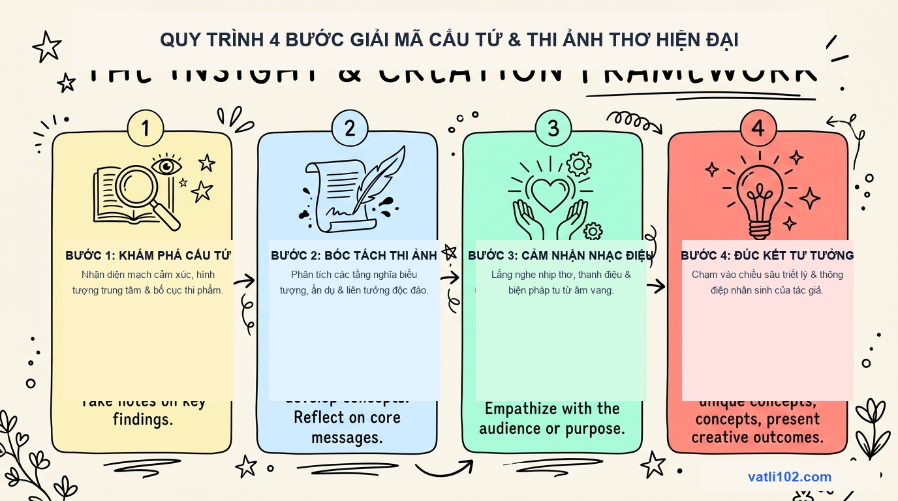

Sổ Tay Phân Tích Thơ Hiện Đại Ngoài SGK: Bí Quyết Giải Mã Cấu Tứ & Thi Ảnh Kỳ Thi Tốt Nghiệp THPT
Trong kỳ thi Tốt nghiệp THPT môn Ngữ văn theo chương trình mới, việc đề thi sử dụng 100% ngữ liệu thơ nằm ngoài sách giáo khoa đã trở thành yêu cầu bắt buộc theo Công văn 3175/BGDĐT. Rất nhiều bạn học sinh khi gặp một bài thơ lạ thường rơi vào trạng thái bối rối: không biết tác giả là ai, hoàn cảnh sáng tác thế nào, dẫn đến việc diễn xuôi bài thơ hoặc phân tích lan man theo cảm tính.
Thực chất, vẻ đẹp và linh hồn của một tác phẩm thơ hiện đại luôn nằm ở hai yếu tố cốt lõi: Cấu tứ (khung sườn tư tưởng nghệ thuật) và Thi ảnh (hình tượng cảm xúc). Khi nắm vững phương pháp bóc tách hai yếu tố này, các em hoàn toàn có thể tự tin chinh phục điểm 9+ ở cả phần Đọc hiểu lẫn câu Viết bài văn nghị luận văn học.
1. Hiểu đúng về Cấu tứ và Thi ảnh trong thơ hiện đại
Trước khi bước vào phân tích, chúng ta cần hiểu bản chất của cấu tứ để không bị nhầm lẫn với bố cục thông thường:
- Cấu tứ không chỉ là dàn bài: Bố cục chỉ là sự phân chia đoạn thơ, còn cấu tứ là cách tác giả tổ chức mạch cảm xúc, là phát hiện bất ngờ kết nối giữa thế giới thực và tâm trạng thi nhân.
- Thi ảnh là nhịp cầu cảm xúc: Hình ảnh trong thơ hiện đại không đơn thuần là cảnh vật sao chép từ thực tế, mà là 'tâm cảnh' — được nhào nặn qua lăng kính tư tưởng độc đáo của nhà thơ.
- Tính liên kết hữu cơ: Một bài thơ xuất sắc luôn có một cấu tứ xuyên suốt, dẫn dắt các thi ảnh vận động từ cụ thể đến khái quát, từ rung động cá nhân đến triết lý nhân sinh sâu sắc.
2. Sơ đồ Sketchnote: Quy trình 4 bước giải mã thơ hiện đại

3. Hướng dẫn chi tiết 4 bước thực hành trên bài thơ lạ
Bước 1: Khám phá Cấu tứ & Mạch vận động cảm xúc
Khi đọc lần đầu tiên, các em hãy tự đặt câu hỏi: Bài thơ này khởi đầu bằng điều gì và kết thúc ở đâu? Cảm xúc của nhân vật trữ tình biến chuyển như thế nào? Thông thường, cấu tứ thơ hiện đại hay vận động theo các hướng: từ không gian hẹp sang không gian rộng lớn, từ hiện tại hồi tưởng về quá khứ rồi hướng tới tương lai, hoặc từ một sự vật nhỏ bé bình dị mở ra bài học cuộc đời.
Bước 2: Bóc tách lớp nghĩa biểu tượng của Thi ảnh
Hãy dùng bút gạch chân những hình ảnh trung tâm xuất hiện nhiều lần hoặc có sự kết hợp từ ngữ lạ lùng. Sau đó phân tích theo 2 lớp nghĩa: Lớp nghĩa thực (hình ảnh miêu tả cái gì ngoài đời?) và Lớp nghĩa biểu tượng (hình ảnh đó đại diện cho tâm tư, khát vọng hay phẩm chất gì?).
Bước 3: Cảm nhận nhạc điệu, thể thơ và biện pháp tu từ
Thơ là nghệ thuật của ngôn từ và âm thanh. Các em cần chỉ rõ thể thơ (tự do, 7 chữ, 8 chữ), cách ngắt nhịp phá cách, sự phối hợp thanh điệu bằng trắc và các biện pháp tu từ tiêu biểu (ẩn dụ chuyển đổi cảm giác, điệp cấu trúc, nhân hóa) đã tạo nên nhạc điệu da diết hay dồn dập như thế nào.
Bước 4: Đúc kết thông điệp tư tưởng và chiều sâu nhân văn
Chặng cuối cùng là trả lời câu hỏi: Qua bài thơ này, tác giả muốn gửi đến chúng ta thông điệp gì về tình yêu quê hương, lẽ sống hay phẩm giá con người? Đây chính là phần giúp bài viết của em đạt điểm tối đa ở mức độ vận dụng cao.
4. Đoạn văn phân tích mẫu thực chiến (Đạt điểm 9+)
5. Bảng so sánh Cấu tứ Thơ truyền thống và Thơ hiện đại
| Tiêu chí so sánh | Thơ truyền thống / Cổ điển | Thơ hiện đại (Chương trình mới) |
|---|---|---|
| Quy tắc niêm luật | Tuân thủ nghiêm ngặt số câu, số chữ, hiệp vần chặt chẽ. | Tự do, co giãn linh hoạt theo dòng cảm xúc nội tâm. |
| Mạch vận động cấu tứ | Thường theo khuôn mẫu ước lệ (Khai - Thừa - Chuyển - Hợp). | Biến hóa đa dạng, liên tưởng nhảy vọt, bất ngờ. |
| Tính chất thi ảnh | Mang tính biểu trưng ước lệ cao (Tùng, Cúc, Trúc, Mai). | Gắn liền với chi tiết đời thường, giàu liên tưởng cá nhân. |
| Dung lượng cảm xúc | Nén cảm xúc vào khuôn phép 'Ý tại ngôn ngoại'. | Bộc lộ trực diện cái tôi cá nhân đa chiều, sâu sắc. |
6. Checklist 4 bước khi làm bài phân tích thơ trong phòng thi
- ✓ Đọc kỹ văn bản ít nhất 2 lần: Lần 1 nắm cảm xúc chung, lần 2 gạch chân từ ngữ và thi ảnh đắt giá.
- ✓ Xác định ngôi kể và chủ thể trữ tình: Phân biệt rõ người đang giãi bày cảm xúc trong bài thơ.
- ✓ Luôn gắn nghệ thuật với nội dung: Khi chỉ ra biện pháp tu từ, bắt buộc phải trả lời câu hỏi 'Nó giúp khắc họa tâm trạng gì?'.
- ✓ Đoạn văn cần có mở - phát triển - kết: Tránh viết dàn trải một mạch không có điểm nhấn trọng tâm.